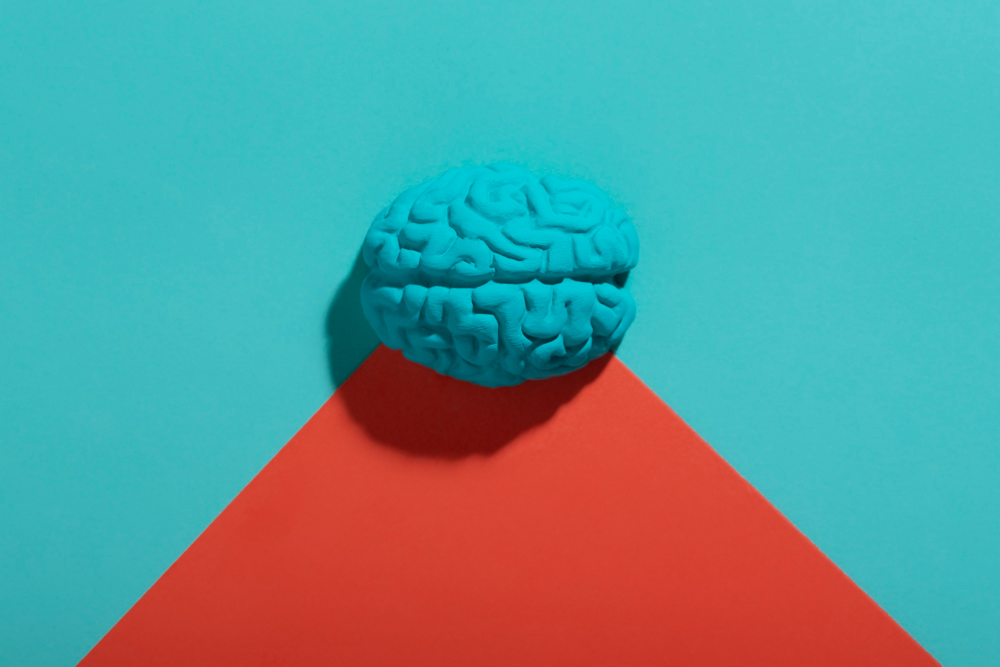

<style>
    .hashtags {
        text-align: center;
        max-width: 800px;
        margin: 20px auto;
        padding: 10px;
    }

    .hashtags a {
        display: inline-block;
        margin: 5px;
        padding: 8px 12px;
        font-size: 0.9rem;
        font-weight: bold;
        text-decoration: none;
        color: #fff;
        background-color: #264653;
        border-radius: 20px;
        transition: background 0.3s ease;
    }

    .hashtags a:hover {
        background-color: #001f3f;
    }

    body {
        font-family: Arial, sans-serif;
        margin: 0;
        padding: 0;
        background-color: #f5f5f5;
        color: #333;
    }

    h2 {
        font-family: "Arial", sans-serif;
        font-size: 2.5rem;
        font-weight: bold;
        color: #001f3f;
        margin-top: 20px;
        text-align: center; /* Center the title */
    }

    p, li {
        font-family: "Arial", sans-serif;
        font-size: 1rem;
        line-height: 1.8;
        text-align: justify;
        margin: 20px auto;
        max-width: 800px;
    }

    .container {
        display: flex;
        flex-direction: column;
        align-items: center;
        padding: 20px;
    }

    img {
        margin: 20px auto;
        border-radius: 8px;
        width: 100%;
        max-width: 800px;
        height: auto;
        box-shadow: 0 4px 8px rgba(0, 0, 0, 0.2);
    }

    .text-muted {
        font-weight: bold;
        color: #264653;
    }

    .references {
        max-width: 800px;
        margin: 20px auto;
    }
</style>

<section id="project-details">
    <div class="container">
        <!-- Page Header -->
        <h2>The Neuroscience of Spaceflight – Long-Term Effects on the Brain & Vision</h2>

        <!-- First Image and Description -->
          

        <p>
Space changes the human body in unexpected ways—but how does it impact the brain and vision long after astronauts return to Earth? A NASA-led study is investigating whether the cognitive and ocular changes seen in space persist for years—and the findings could shape the future of long-duration missions.
        </p>
        <p>
Researchers from NASA, University of Pennsylvania, Baylor College of Medicine, and Charité Berlin are tracking astronauts post-flight and for up to 5 years after landing to study how spaceflight-induced brain fluid shifts and intracranial pressure changes affect vision, cognitive performance, and cerebrovascular health.
        </p>
      <strong>Why does this matter?</strong>
      <ol>
        <li>Helps determine whether long-term vision impairment is reversible.</li>
        <li>Identifies risk factors for astronauts on deep-space missions.</li>
        <li>Contributes to medical countermeasures for space-induced neuro-ocular changes.</li>
      </ol> 
       
      <p>
The results could reshape how we prepare astronauts for extended missions, from AI-driven cognitive support to personalized health protocols. How can we ensure space travelers stay neurologically and visually fit for Mars and beyond?        </p>


        <!-- Hashtags -->
        <div class="hashtags">
            <a href="https://www.google.com/search?q=SpaceHealth" target="_blank">#SpaceHealth </a>
            <a href="https://www.google.com/search?q=Neuroscience" target="_blank">#Neuroscience</a>
            <a href="https://www.google.com/search?q=AstronautHealth" target="_blank">#AstronautHealth</a>
            <a href="https://www.google.com/search?q=VisionInSpace" target="_blank">#VisionInSpace</a>
            <a href="https://www.google.com/search?q=BrainHealth" target="_blank">#BrainHealth</a>
            <a href="https://www.google.com/search?q=PsychologicalHealth" target="_blank">#PsychologicalHealth</a>
        </div>

        <!-- References -->
        <div class="references">
            <h3>References</h3>
            <ol>
                <li>Carter, K.J. et al. Investigating Long-term Structural and Functional Changes to the Eye and Brain After Spaceflight. NASA, University of Pennsylvania, Baylor College of Medicine, Charité Berlin.</li>
            </ol>
        </div>
    </div>
</section>
